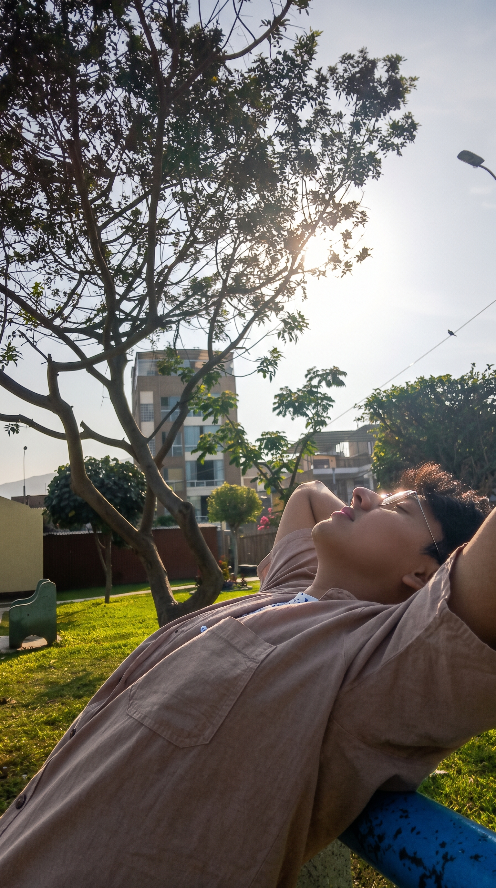
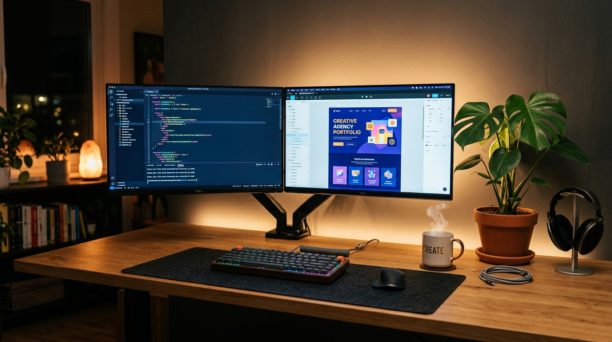

Hola, soy Jhairo Manuel
Bienvenido a mi espacio personal. Aquí comparto quién soy, mi recorrido en la Ingeniería de Sistemas, las pasiones que me impulsan día a día y los proyectos y metas que construyo con disciplina y dedicación.

¿Quién está detrás de Jhairo?
Más allá de una carrera profesional, soy alguien motivado por la perseverancia, la curiosidad y las ganas de crear valor real.
Mi nombre es Jhairo Manuel Ventocilla Juan de Dios. Desde que elegí el camino de la tecnología y la Ingeniería de Sistemas, entendí que cada reto complejo es una oportunidad para aprender, perfeccionar habilidades y forjar disciplina.
Me caracterizo por ser una persona proactiva, solidaria y orientada a los resultados. Disfruto tanto de la lógica profunda del desarrollo de sistemas como del trabajo en equipo, siempre buscando que cada proyecto tenga un impacto positivo en las personas.
"El éxito es la suma de pequeños esfuerzos repetidos día tras día."
Pensamiento Analítico
Capacidad para entender requerimientos, estructurar lógica sólida y resolver problemas de fondo.
Valores y Ética
Honestidad, lealtad y compromiso absoluto con la palabra dada y la excelencia en cada entrega.
Crecimiento Continuo
Siempre dispuesto a sumar nuevas tecnologías, certificaciones y hábitos que eleven mi nivel.
Pasión en Acción
Entusiasmo genuino por materializar ideas en herramientas útiles y soluciones eficientes.
El Camino de Mi Vida
Cada etapa de mi vida ha sido un pilar para moldear mi carácter, descubrir mi vocación y orientar mis pasos.
Primeros Pasos y Pasión por la Lógica
Desde temprana edad sentí gran curiosidad por la informática, las computadoras y los sistemas. Entender qué ocurría detrás de una pantalla se convirtió en la chispa que encendió mi vocación.
Ingeniería de Sistemas (UCV)
Inicié mi carrera universitaria en la Universidad César Vallejo (UCV). Cursos de algoritmos, estructuras de datos, arquitectura de software, bases de datos y gestión de proyectos consolidaron mi base técnica y disciplina académica.
Desarrollo de Software y Soluciones Reales
Poner en práctica lo aprendido mediante el desarrollo de aplicaciones, diseño de bases de datos y proyectos de automatización. Superando obstáculos, aprendiendo de cada desafío y mejorando día con día.
Consolidación Profesional y Nuevas Metas
Con la mirada puesta en metas ambiciosas: liderar iniciativas de ingeniería, integrarme a equipos de alto impacto y seguir evolucionando profesionalmente con la máxima calidad y entusiasmo.
Lenguajes & Tecnologías Clave
Explora en perspectiva 3D interactiva los lenguajes de programación, motores de bases de datos y herramientas con las que desarrollo soluciones.
Lo que me Mueve y Apasiona
Un balance armónico entre conocimiento técnico, competencias humanas e intereses personales.
Desarrollo de Software & Web
Construcción de interfaces atractivas, lógica estructurada y aplicaciones funcionales y eficientes.
Bases de Datos & SQL
Modelado relacional, consultas estructuradas, administración con SQL Server / SSMS y persistencia de datos.
Análisis de Datos & Power BI
Transformación de datos en métricas clave, reportes visuales dinámicos y tableros interactivos para toma de decisiones.
Trabajo en Equipo & Empatía
Colaboración proactiva, comunicación abierta y alineación para lograr objetivos compartidos con éxito.
Resolución de Problemas
Capacidad para descomponer dificultades complejas, priorizar tareas y encontrar salidas prácticas e innovadoras.
Música, Naturaleza & Viajes
Caminatas al aire libre para despejar la mente y la música como motor en mis sesiones de enfoque y creatividad.
Momentos, Espacios y Proyectos
Un vistazo visual a los lugares donde fluyen mis ideas y a los momentos que nutren mi espíritu.
Jhairo en Esencia
Autenticidad, presencia y determinación en cada paso.

Espacio de Creación
Donde las horas vuelan programando, diseñando e innovando.
Horizontes & Aventura
Caminar senderos para desconectar, pensar en grande y recargar el alma.
Fotografía Oficial
Compromiso formal y presencia ejecutiva.
Perfil GitHub & Tech
Conectando con proyectos y código abierto.
¿Quieres Conversar o Colaborar?
Siempre estoy abierto a una buena charla, oportunidades de desarrollo, proyectos de ingeniería o simplemente saludarnos.
¡Hagamos equipo y creemos valor!
Ya sea para una oportunidad profesional, compartir conocimientos o charlar sobre tecnología, puedes contactarme directamente por estos canales: